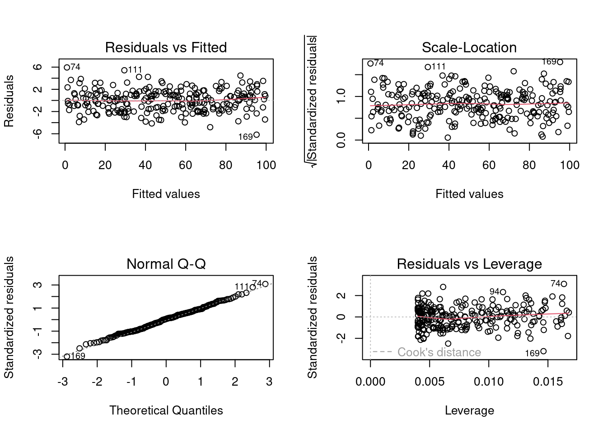
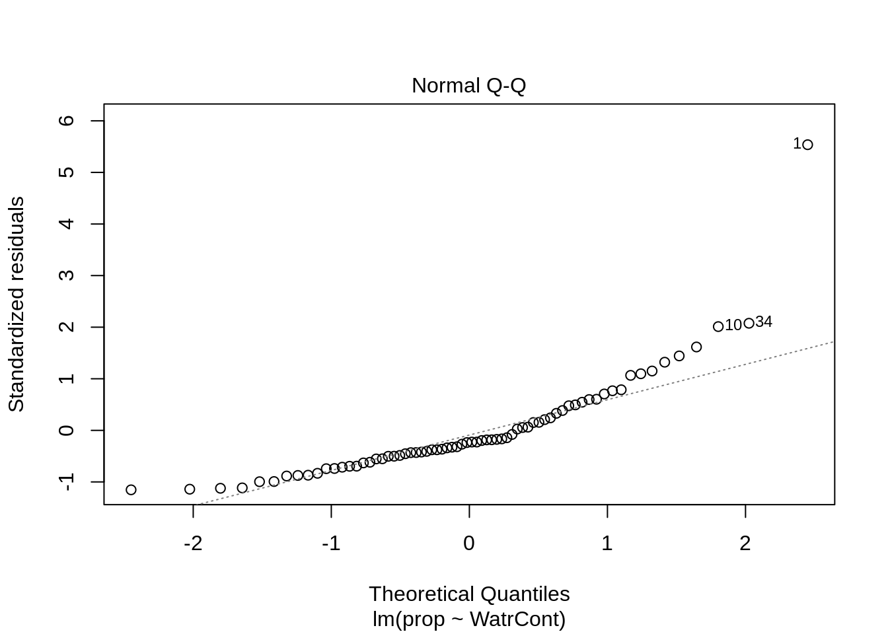
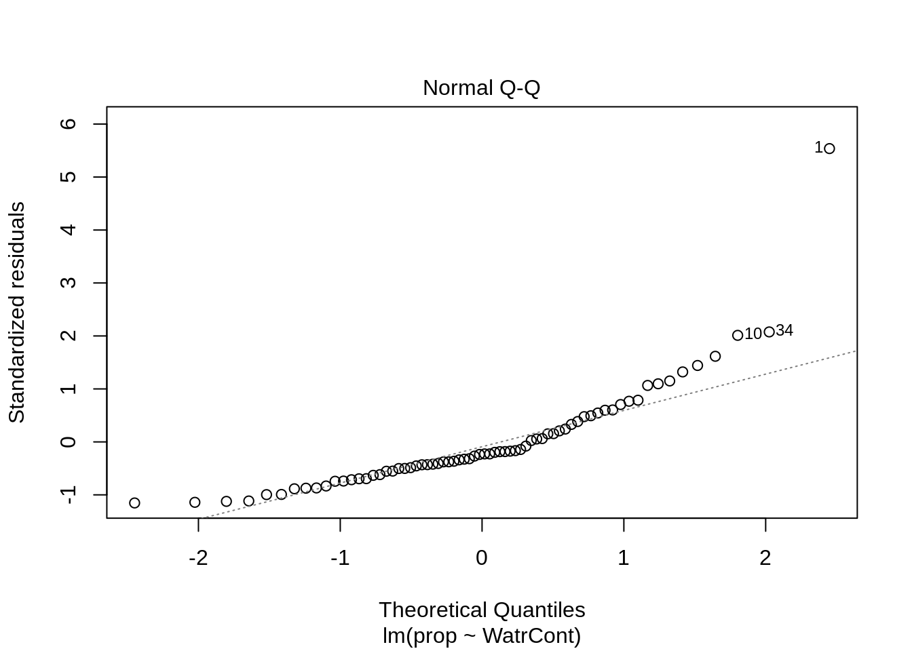
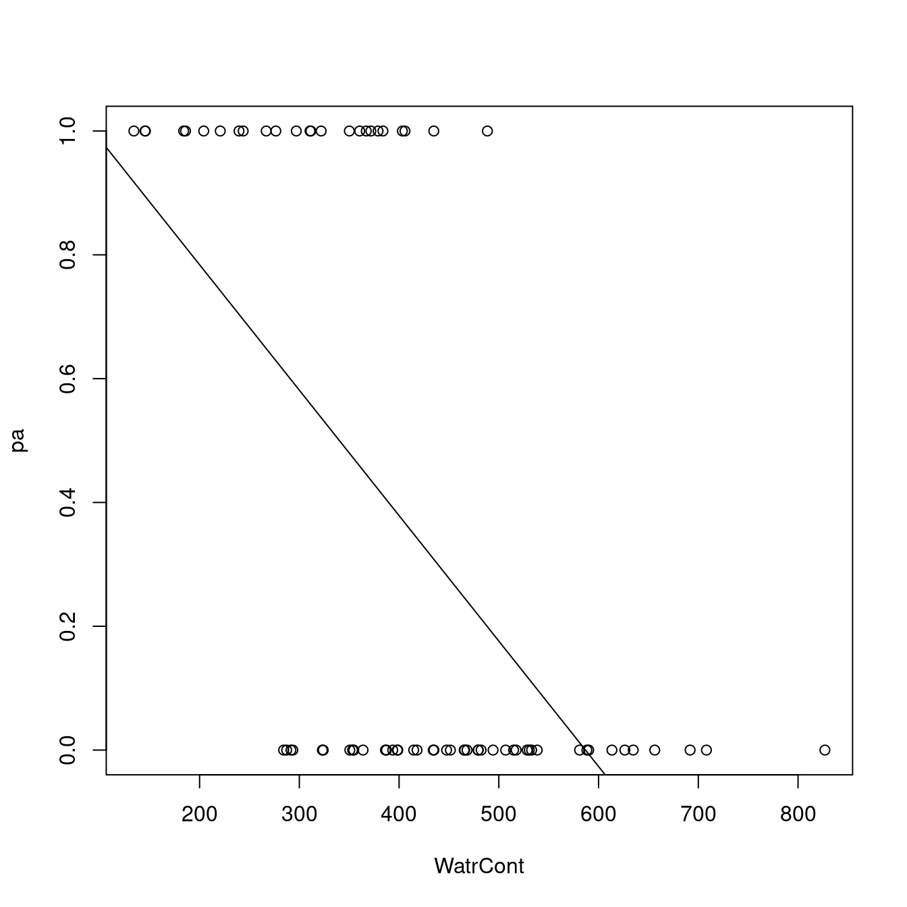

Chapter 4 An example with general linear models
Let us use our prior knowledge on general linear models to explore the relationship between variables within the Oribatid mite dataset.
Let us begin by loading this dataset into R:
# Use setwd() to set your working directory
mites <- read.csv('data/mites.csv',
stringsAsFactors = TRUE)The dataset that you just loaded is a subset from the classic ‘Oribatid
mite dataset’, which has been used in numerous texts (e.g. Borcard,
Gillet & Legendre, Numerical Ecology with R), and which is available
in the vegan library.
The Oribatid mite dataset has 70 observations with moss and mite samples collected Station de Biologie des Laurentides from the Université de Montréal, within the municipality of Saint-Hippolyte, Québec (Canada). Each sample includes 5 variables of environmental measurements and abundance for Galumna sp. for each site.
We can peek into the structure and the first six rows of the dataset using the head() and str() functions:
## Galumna pa totalabund prop SubsDens WatrCont Substrate Shrub Topo
## 1 8 1 140 0.057142857 39.18 350.15 Sphagn1 Few Hummock
## 2 3 1 268 0.011194030 54.99 434.81 Litter Few Hummock
## 3 1 1 186 0.005376344 46.07 371.72 Interface Few Hummock
## 4 1 1 286 0.003496503 48.19 360.50 Sphagn1 Few Hummock
## 5 2 1 199 0.010050251 23.55 204.13 Sphagn1 Few Hummock
## 6 1 1 209 0.004784689 57.32 311.55 Sphagn1 Few Hummock## 'data.frame': 70 obs. of 9 variables:
## $ Galumna : int 8 3 1 1 2 1 1 1 2 5 ...
## $ pa : int 1 1 1 1 1 1 1 1 1 1 ...
## $ totalabund: int 140 268 186 286 199 209 162 126 123 166 ...
## $ prop : num 0.05714 0.01119 0.00538 0.0035 0.01005 ...
## $ SubsDens : num 39.2 55 46.1 48.2 23.6 ...
## $ WatrCont : num 350 435 372 360 204 ...
## $ Substrate : Factor w/ 7 levels "Barepeat","Interface",..: 4 3 2 4 4 4 4 2 3 4 ...
## $ Shrub : Factor w/ 3 levels "Few","Many","None": 1 1 1 1 1 1 1 2 2 2 ...
## $ Topo : Factor w/ 2 levels "Blanket","Hummock": 2 2 2 2 2 2 2 1 1 2 ...Our first glance into the dataset already allows us to separate potential response variables from potential predictors:
Response variables:
- Occurrence:
pa - Abundance:
Galumna - Relative Frequency or Proportion:
prop
Predictive variables:
- Substract Density:
SubsDens - Water Content:
WatrCont - Substrate:
Substrate - Shrubs Nearby:
Shrub - Topography:
Topo
We can also already ellaborate an initial question: Could the abundance, occurrence or proportion of Galumna sp. be predicted by environmental features?
To answer this question, we can think of a variety of functions:
\(\text{Abundance} = f(\text{Water content}, \epsilon)\)
\(\text{Proportion} = f(\text{Water content}, \epsilon)\)
\(\text{Occurrence} = f(\text{Substrate}, \epsilon)\)
\(\text{Abundance} = f(\text{Topography}, \epsilon)\)
\(\text{Occurrence} = f(\text{Shrubs Nearby}, \epsilon)\)
\(\text{Relative Frequency} = f(\text{Topography}, \epsilon)\)
\(\text{Occurrence} = f(\text{Substract Density}, \epsilon)\)
\(\text{Abundance} = f(\text{Substrate}, \epsilon)\) ]
Let us attempt to be more specific and ask wether Galumna’s community values (abundance, occurrence and relative frequency) vary as a function of water content.
We can begin by representing all three response variables against the predictor:



Indeed, Galumna seems to vary negatively as a function of WatrCont, i.e.
Galumna sp. seems to prefer dryer sites.
We can go step further and fit general linear models to test whether Galumna, pa, and/or prop vary as a function of WatrCont
lm.abund <- lm(Galumna ~ WatrCont, data = mites)
## summary(lm.abund)
lm.pa <- lm(pa ~ WatrCont, data = mites)
## summary(lm.pa)
lm.prop <- lm(prop ~ WatrCont, data = mites)Then, we can check the model output to verify whether these relationships are statistically significant:
##
## Call:
## lm(formula = Galumna ~ WatrCont, data = mites)
##
## Residuals:
## Min 1Q Median 3Q Max
## -1.7210 -0.8236 -0.3270 0.3910 6.6772
##
## Coefficients:
## Estimate Std. Error t value Pr(>|t|)
## (Intercept) 3.439349 0.555825 6.188 3.98e-08 ***
## WatrCont -0.006045 0.001280 -4.723 1.21e-05 ***
## ---
## Signif. codes: 0 '***' 0.001 '**' 0.01 '*' 0.05 '.' 0.1 ' ' 1
##
## Residual standard error: 1.514 on 68 degrees of freedom
## Multiple R-squared: 0.247, Adjusted R-squared: 0.2359
## F-statistic: 22.31 on 1 and 68 DF, p-value: 1.206e-05##
## Call:
## lm(formula = pa ~ WatrCont, data = mites)
##
## Residuals:
## Min 1Q Median 3Q Max
## -0.61320 -0.30889 -0.05498 0.30247 0.80073
##
## Coefficients:
## Estimate Std. Error t value Pr(>|t|)
## (Intercept) 1.1892142 0.1431306 8.309 6.03e-12 ***
## WatrCont -0.0020263 0.0003296 -6.148 4.68e-08 ***
## ---
## Signif. codes: 0 '***' 0.001 '**' 0.01 '*' 0.05 '.' 0.1 ' ' 1
##
## Residual standard error: 0.3897 on 68 degrees of freedom
## Multiple R-squared: 0.3573, Adjusted R-squared: 0.3478
## F-statistic: 37.8 on 1 and 68 DF, p-value: 4.677e-08##
## Call:
## lm(formula = prop ~ WatrCont, data = mites)
##
## Residuals:
## Min 1Q Median 3Q Max
## -0.010208 -0.004927 -0.002056 0.003240 0.049252
##
## Coefficients:
## Estimate Std. Error t value Pr(>|t|)
## (Intercept) 2.020e-02 3.294e-03 6.133 4.98e-08 ***
## WatrCont -3.516e-05 7.586e-06 -4.635 1.67e-05 ***
## ---
## Signif. codes: 0 '***' 0.001 '**' 0.01 '*' 0.05 '.' 0.1 ' ' 1
##
## Residual standard error: 0.008971 on 68 degrees of freedom
## Multiple R-squared: 0.2401, Adjusted R-squared: 0.2289
## F-statistic: 21.49 on 1 and 68 DF, p-value: 1.665e-05## (Intercept) WatrCont
## 3.981563e-08 1.206117e-05## (Intercept) WatrCont
## 6.030252e-12 4.676755e-08## (Intercept) WatrCont
## 4.977432e-08 1.665437e-05Yes, there is a strong and significant relationship for all 3 response variables! Wait a minute… We are forgetting something important here! What about the assumptions of linear models?
4.1 Recalling linear models: assumptions
Let’s validate these models to make sure that we respect assumptions of linear models, starting with the abundance model.
We can see a strong and significant relationship for all three models, concerning each one of the three response variables!
Nevertheless, we cannot forget the most important step: verifying if the assumptions for these general linear models have not been violated.
Let us begin by validating these models to make sure that we respect assumptions of linear models, starting with the abundance model.

The model does not fit well. It predicts negative abundance values when
WatrCont exceeds 600, which does not make any sense. Also, the model
does poorly at predicting high abundance values at low values of WatrCont.
We can also check the model diagnostic plots:


Diagnostic plots show that the data/model violate assumptions of homogeneity of variance (the graph on the left shows that residuals are larger at higher fitted values) and normality (the graph on the right indicates that residuals are not distributed as expected from a normal distribution, i.e. many points are far from predicted values given by the dotted line). Therefore, we need to reject this model, and can’t use it to conclude that Galumna abundance varies as a function of water content.
Looking at diagnostic plots for the presence-absence model and the proportion model also indicate that these models are also inappropriate:


 

Let’s take a step back here and review the assumptions of linear models, and where they come from. Remember our simple linear model?
\[Y_i = \beta_0 + \beta_1X_i + \varepsilon\]
where:
- \(Y_i\) is the predicted value of a response variable
- \(\beta_0\) is the unknown coefficient intercept
- _1$ is the unknown coefficient slope
- \(X_i\) is the value of the explanatory variable
- \(\varepsilon_i\) is the model residual drawn from a normal distribution with a varying mean but a constant variance.
This last point about \(\varepsilon_i\) is important. This is where assumptions of normality and homoscedasticity originate. It means that the residuals (the distance between each observation and the regression line) can be predicted by drawing random values from a normal distribution.
Recall that all normal distributions have two parameters, \(\mu\) (the mean of the distribution) and \(\sigma^2\) (the variance of the distribution). In a linear model, \(\mu\) changes based on values of \(X\) (the predictor variable), but \(\sigma^2\) has the same value for all values of \(Y\). Our simple linear can also be written as this:
\[Y_i \sim N(\mu = \beta_0 + \beta_1 X_i +\varepsilon, \sigma^2)\]
with \(N(\cdot)\) meaning that \(Y_i\) is drawn from a normal distribution with parameters \(\mu\) (mean; which depends on \(x_i\)) and \(\sigma\) (variance; which has the same value for all \(Y_i\)s).
Let’s take a look at what happens to the distribution when we vary the parameters \(\mu\) and \(\sigma\).
Varying \(\mu\) while \(\sigma = 5\) shifts the mean of the distribution.

If we keep \(\mu = 25\), varying \(\sigma\) changes the shape of the distribution, where smaller \(\sigma\) (low variance) means there is higher probability around the mean, while larger \(\sigma\) spreads out the probabilities across the full range of values.

4.1.1 Model prediction
When the assumptions of the linear model are not met, model prediction becomes problematic. Let’s work through an example to demonstrate some of the problems that arise from a poorly fitted model.
Remember that when we predict, we aim at estimating the unknown coefficients \(\beta_0\) and \(\beta_1\) so that a line effectively predicting every value of \(Y\) as a function of \(X\) can be drawn!
\[Y_i \sim N(\mu = \beta_0 + \beta_1 X_i +\varepsilon, \sigma^2)\]
Let’s predict Galumna abundance at a water content = 300 using the linear model we fit above. What are the parameters of the normal distribution used to model \(Y\) when water content is \(300\)?
Let’s begin by obtaining the parameters \(\mu\) and \(\sigma^2\) for a normal distribution corresponding to our equation. To obtain the coefficients from our models, we can use the function coef():
## (Intercept) WatrCont
## 3.439348672 -0.006044788These coefficients would allow us to predict Galumna abundance if there was no error. However, we know that error is an irrevocable part of our model. To get our predicted values, we therefore also need to add . This is where we use the normal distribution! For \(X\) = 300, our model predicts that should follow a normal distribution with mean = 1.63. We can extract the variance (\(\sigma^2\)) from our model summary:
## [1] 1.513531We can plug these values into the equation we just discussed above: \[Y_i \sim N(\mu = \beta_0 + \beta_1 X_i +\varepsilon, \sigma^2)\] \(\mu = 3.44 + (-0.006 \times 300) = 1.63\)
\(\sigma^2 = 1.51\)
This tells us that randomly drawn \(Y\) values when water content is \(300\) should be on average \(1.63\) and have a variance of \(1.51\). In other words, at \(x = 300\), residuals should follow a normal distribution with \(\mu = 1.63\) and \(\sigma^2 = 1.51\). At \(x = 400\), we get \(\mu = 1.02\) and \(\sigma^2 = 1.51\), etc.
At a water content of 400, residuals should follow a normal distribution with parameters \(\mu = 3.44 + (-0.006 x 400) = 1.02\) and \(\sigma^2 = 1.51\), etc. Each \(Y\) value is modeled using a normal distribution with a mean that depends on \(X_i\), but with a variance that is constant \(\sigma^2 = 1.51\) across all \(X_i\) values. Graphically, this looks like this:

The four normal distributions on this graph represent the probability of observing a given Galumna abundance for 4 different water content values. The mean of the normal distribution varies as a function of water content (hence \(\mu\) decreases with water content), but \(\sigma^2\) is always 1.51 (i.e. the variance is homogeneous across all values of \(X\)).
This model is inappropriate for at least two reasons:
1. Values are on average further from the regression line at low water content values. That is, there is more residual variance around the predicted values for low values of \(X\), such that \(\varepsilon\) varies as a function of \(X\), thus violating the assumption of homoscedasticity. It makes no sense to use a constant value of \(\sigma^2\): the normal distributions used to predict \(Y\) at low values of \(X\) should ideally be wider (have a larger \(\sigma^2\)) than normal distributions used to predict \(Y\) at large \(X\) values, but linear models do not permit this.
2. The residuals do not follow a normal distribution with constant variance across all values of \(X\). The variance of the residuals’ distribution changes as a function of \(X\) (see the spread of the data points around the trendline!).
3. The predicted values do not make sense, given the observations. Our response variable is abundance, which can only take integer values. Yet, at water content = 300, the abundance value that our model predicts to be the most probable is 1.63! We know that the probability of observing 1.63 individuals at water content = 300 is actually zero, as is the probability of observing any fraction (non-integers). Our predicted values should be modeled using a distribution that only predicts integers, rather than a continuous distribution like the normal distribution. This is a very common problem, as biological data often follows one of the myriad other statistical distributions besides the normal distribution.
4.1.2 So, what do we do now? Transform our data?
Very often, data will not “behave” and will violate the assumptions we have seen, showing evidence for non-normality and/or heteroskedasticity.
We have been told to transform our data using logarithmic, square-root, and cosine transformations to get around these problems. Unfortunately, transformations not always work and come with a few drawbacks:
1. They change the response variable (!), making interpretation challenging; 2. They may not simulateneously improve linearity and homogeneity of variance; 3. The boundaries of the sample space change.
For instance, our simple linear model:
\[Y_i = \beta_0 + \beta_1X_i + \varepsilon\]
looks like this under a log-transform:
\[E(\log{Y_i}) = \beta_0 + \beta_1X_i \]
It is, of course, much less intuitive to interpret that for every \(300\) units increase in water content, Galumna abundance takes the form of \(\log(1.63)\)…
Thankfully, the normal distribution is not our only option!